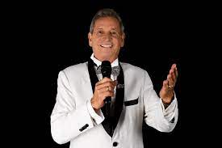
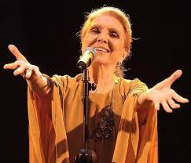
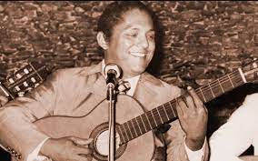
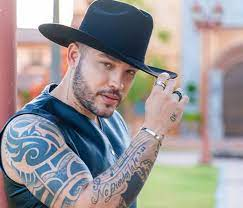
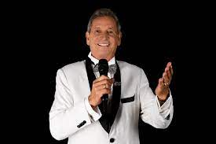
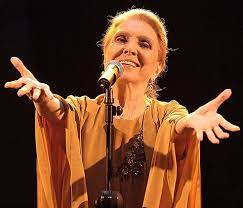
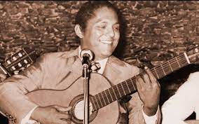
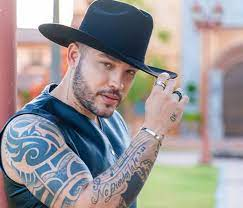

La música popular del despecho se caracteriza por poseer letras que se refieren a la intensidad de los sentimientos producidos por amores no correspondidos, lo cual constituye el núcleo y el propósito expresivo de estas canciones. Musicalmente este estilo de música esta conformado por canciones de estructura musical y rítmica sencilla, como el vals, el corrido, la canción o el bolero, de fácil asimilación por las clase campesinas y populares de Latino América. Pero lo fundamental de estas canciones es la letra que se base en el concepto “despecho”, que puede ser sinónimo de angustia o desesperación.
 







La musica despecho nació en el departamento de Antioquia y se extendió por el eje cafetero, para después llegar al norte del departamento del Valle, de donde se dirigió finalmente a todo el sur occidente colombiano y, por ende, a la ciudad de Popayán. Los antecedentes de la música carrilera, cantinera o de despecho en Colombia se encuentran en los ritmos de países como México y Ecuador. Pero la influencia más notoria está en la música mexicana que llegó al país gracias a películas y discos .
Desde los años 30, entre los músicos extranjeros que se establecieron en Colombia y consolidaron la difusión del tango en el país.
Francisca Viveros Barradas, nació en Alto Lucero, Veracruz el 2 de abril de 1947. Siendo aún una niña descubrió el talento que la haría famosa ya que constantemente sus profesores la invitaban a cantar en los festivales de la escuela. Paquita sólo terminó la primaria. A los 16 años comienza a trabajar en el Registro Civil de su pueblo donde conoció a su primer esposo, Miguel Gerardo Martínez, Tesorero de la Presidencia Municipal. Aunque era 18 años mayor que ella, contrajeron matrimonio y tuvieron dos hijos. Tiempo después descubrió que era un hombre casado y que tenía otra familia.
Darío de Jesús Gómez Zapata (San Jerónimo, Antioquia; 6 de febrero de 1951-Medellín; 26 de julio de 2022) fue un cantante y compositor colombiano de música popular colombiana, conocido como El Rey del Despecho. También interpretaba temas en los géneros de la balada, música tropical y ranchera. Su iniciación en la interpretación ocurrió con un grupo llamado Los Legendarios, hasta lograr conformar su propio sello disquero. Su carrera artística le ha brindado más de seis millones de discos vendidos en los mercados nacionales e internacionales. De hecho, su fama mundial lo llevó a grabar un vídeo promocional en París.
María Dolores Fernández Pradera (Madrid; 29 de agosto de 1924), artísticamente María Dolores Pradera, fue una cantante melódica y actriz española. Su trayectoria artística comenzó en 1943 logrando ser primera figura del teatro, posteriormente como actriz de cine y finalmente cantante en espectáculos en directo. Dado el éxito de sus grabaciones discográficas realizó giras por varios países, especialmente en Hispanoamérica, y se dedicó por entero a la canción desde comienzos de la década de 1970.
Julio Alfredo Jaramillo Laurido (Guayaquil, 1 de octubre de 1935) fue un cantante y compositor ecuatoriano apodado «El ruiseñor de América». Logró gran fama en numerosos países de Sudamérica por sus interpretaciones de boleros, vals, pasillos, tangos y rancheras. Habiendo grabado alrededor de 2200 canciones a lo largo de su carrera, su canción más famosa fue y es «Nuestro juramento» muy conocida en toda Sudamérica. Es considerado uno de los cantantes más queridos del Ecuador.